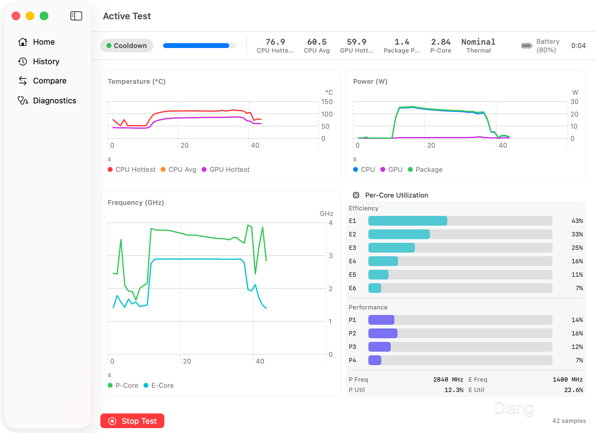
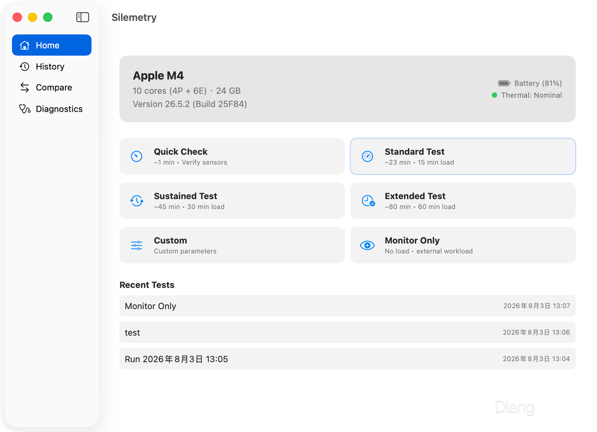

从散热测试想法到原生 macOS 应用：Silemetry 开发记录
Silemetry — See what your silicon can sustain.
Silemetry 面向 Apple Silicon，记录温度、功耗、频率、每核心利用率、电源状态和测试阶段。它既能制造 CPU、GPU、混合负载，也能把空闲、升温、稳态到冷却的过程保存下来。
7 月 28 日第一次提交，8 月 3 日完成 v0.2.1，正好一周。我原本只是想观察 MacBook Air 的持续负载降频，后来陆续加上了 SwiftUI 界面、Rust 遥测、C 与 Metal 负载、SwiftData 和 JSONL 存储，以及 CI 与 DMG 分发。
这篇记下实现里的取舍，尤其是数据口径、并发、文件事务和跨语言边界上实际出过的问题。
项目仓库： leecdiang/Silemetry-mac

1. 为什么要做 Silemetry
1.1 MacBook Air 的持续性能问题
我的主力机是 M4 MacBook Air。它安静、轻薄、续航好，也没有风扇；持续负载产生的热量，要靠均热结构、外壳和自然对流散出。
浏览网页、写文档时不明显，长时间编译、导出视频、本地推理和科学计算时，温度则会逐渐上升。系统调整频率、电压与调度来控制温度、功耗，任务速度可能从开始的快，变成几分钟后的波动，停下后再恢复。
我想知道这些变化具体发生在什么时候：
- 第几分钟开始降频？
- 降频前后的频率和功耗分别是多少？
- CPU 与 GPU 同时工作时，谁先受热限制？
- 机身冷却后，性能恢复需要多久？
- 两次测试之间的差异究竟来自散热条件，还是来自供电、低电量模式和后台进程？
一个最终分数和“感觉慢了”，都不足以核对。
1.2 跑分不能回答什么
Geekbench 更偏短时峰值，Cinebench 循环能观察部分衰减。要把温度、功耗、频率按同一条时间轴对起来，仍需要另外记录。
我想保存下面这段过程：
1 | 空闲状态 → 开始负载 → 温度爬升 → 功耗稳定 → 频率变化 → 停止负载 → 冷却恢复 |
如果第 6 分钟频率下降，我希望同时知道那一刻温度是多少、CPU/GPU 功耗是否发生变化、系统是否切换了 Thermal State；如果更换环境或散热条件，我还希望把两轮测试放在一起比较。
所以先做好测量，再考虑怎样产生压力。
1.3 我真正想测量的：芯片能持续维持什么性能
持续性能由芯片、封装、机身散热、调度、供电与负载共同决定，不能用一个硬件参数代替。
要记录这个过程，需要连续采样、可重复负载和完整保存。
- 连续采样：温度、功耗、频率和利用率需要按时间记录；
- 稳定负载：必须有可控、可重复的 CPU/GPU 工作负载；
- 完整保存：测试结束后能够回看、导出和比较，而不是只显示一个瞬时数字。
保存下来以后，才能比较系统版本、室温、供电和优化前后的差别。
1.4 项目边界：原生、轻量、不关闭 SIP、不安装内核扩展
立项时定下的范围如下。
- 原生应用：使用 SwiftUI 和 macOS 原生框架，不使用 Electron 套壳；
- 开箱即用：拖入 Applications 即可，不依赖 Homebrew、Python 或外部服务；
- 无需管理员权限：运行测试时不弹 sudo，不要求用户输入密码；
- 不关闭 SIP：不修改系统安全策略；
- 不安装内核扩展：所有采样和负载都在用户态完成。
这些条件限制了实现：核心目标只能用 QoS 表达倾向，不能依赖受限硬绑定；遥测也要嵌进进程，不能不断启动需 root 的 powermetrics。
底层使用 IOReport 相关能力，虽然可在用户态运行，却不是 Apple 向普通第三方长期承诺稳定的公开高层 API。无需 root 解决的是权限，系统版本兼容仍要验证。
1.5 从 ThermalBench 到 Silemetry
最早叫 ThermalBench，后来增加设备识别、遥测、外部负载监控、历史与比较，名称已经装不下这些功能。
于是我把公开名称改成了 Silemetry：Silicon + Telemetry。
Silemetry 更接近观察芯片持续行为的目标。工程目录和部分类型仍用 ThermalBench，内部名称不影响使用，我没有为此大范围重命名。
2. 一款 Swift、Rust、C 和 Metal 混合应用
2.1 整体架构
Swift、Rust、C 和 Metal 在应用中分别负责以下部分：
图 1：Silemetry 的分层架构。UI、状态机、服务、采样与存储各自有明确边界。
UI、状态机、采样、负载和存储各管自己的生命周期。跨语言统一走 C ABI，Swift 不依赖 Rust 的内部类型。

2.2 SwiftUI 应用层
SwiftUI 负责应用外观、页面路由和状态展示。界面主要由几类页面组成：
- Home：选择预设或进入自定义测试；
- Active Test：展示当前阶段、实时指标和曲线；
- Results：查看温度、功耗、频率、核心利用率和数据质量；
- History：管理历史测试；
- Compare：比较两次测试；
- Diagnostics：检查设备和遥测后端状态。
全局导航和上下文由 AppModel 管理，测试运行状态由 TestCoordinator 统一发布。SwiftUI View 不直接控制 CPU/GPU worker，也不直接触碰 FFI handle，只根据状态更新界面并提交用户意图。
View 如果持有 worker 或 FFI handle，切页面、销毁窗口、取消任务就都可能介入资源生命周期，因此这些资源留在服务层。
2.3 TestCoordinator：测试调度与状态机
TestCoordinator 是整个应用的核心。它运行在 @MainActor 上，负责测试配置、阶段切换、采样循环、负载启停和最终记录生成。
状态被显式建模为一个枚举：
1 |
|
显式状态能限制错误组合。例如测试已取消却仍跑 GPU，记录已保存而页面仍显示运行，都需要明确由谁发布状态、由谁收尾。
2.4 Rust 遥测核心
TelemetryCore 是一个嵌入应用的 Rust crate，内部 vendor 了 macmon 0.8.0。它负责：
- 启动后台采样线程；
- 按指定间隔读取底层指标；
- 把结果转换成 C 兼容结构体；
- 给每条样本分配递增序列号；
- 通过 FFI 向 Swift 提供等待、读取、停止和销毁接口。
macmon 已有 IOReport 通道枚举和聚合能力，Rust 模块再封装采样线程、队列和错误处理。
应用运行时不会启动外部 Rust 进程。Rust 被编译成静态库，直接链接进 macOS App。
2.5 C：CPU 工作负载与每核心利用率
CPU 负载由 C 实现。每个 worker 使用 pthread 启动，在循环中执行 NEON FMA 运算，持续消耗执行单元，同时通过校验和防止编译器把计算优化掉。
每核心利用率也放在 C 层，通过 host_processor_info 读取每个逻辑核心的 tick 变化，再计算相邻采样之间的 busy ratio。
C 层路径短、运行时开销低，也便于通过 C ABI 连接另外两种语言。
2.6 Metal：GPU 计算负载
GPU 负载由 Metal compute shader 生成。shader 主要执行 FMA、三角函数和寄存器内迭代，目标是让负载偏向计算而不是大规模内存搬运。
Swift 侧的 GPUWorkloadManager 负责创建 command queue、pipeline、buffer 和持续提交循环。Metal shader 在构建阶段编译为 default.metallib，随应用一起打包。
2.7 SwiftData 与 JSONL：两层数据存储
测试数据分成两层：
- JSONL 文件保存逐条原始样本；
- SwiftData 保存每次测试的摘要和索引。
目录大致是：
1 | Application Support/Silemetry/ |
长测试可能有几千甚至几万条样本，逐条建成数据库实体会增加写入、查询和迁移成本。JSONL 可以流式追加，坏一行也仍能读其余部分。
History 则需要排序、检索、重命名和快速显示，所以把每次测试的元数据和摘要放进 SwiftData。
原始样本在文件里，数据库保留索引和摘要。
3. 如何测量 Apple Silicon
3.1 为什么没有直接调用 powermetrics
powermetrics 是 macOS 自带的性能采样工具，输出内容很丰富，但直接把它作为应用后端有几个问题：
- 某些采样能力需要更高权限；
- 外部进程的启动、停止和 stdout 解析较重；
- 采样节奏和错误恢复不容易精确控制；
- 用户会看到权限和命令行层面的复杂度。
Silemetry 的目标是单 App、无 sudo，因此采用进程内遥测核心。Swift 只面对结构化样本，不需要解析文本输出，也不用维护一个外部子进程。
3.2 从 macmon 到嵌入式 TelemetryCore
macmon 解决了底层通道枚举和大量指标聚合问题。Silemetry 没有直接调用它的命令行界面，而是把相关代码 vendor 到自己的 Rust crate 中，再包一层稳定的采样接口。
选择 vendor 有两个原因：
- 可复现构建：CI 不依赖运行时网络拉取；
- 接口可控：应用只暴露自己需要的字段和错误码，不让 Swift 依赖上游内部实现。
TelemetryCore 对上层只提供一组 C 函数，内部如何采样、缓存和聚合都可以独立演进。
3.3 Swift 与 Rust 的 FFI 接口
Rust 侧通过 extern "C" 导出函数，Swift 通过 Bridging Header 调用：
1 |
|
wait_next 是关键接口。Swift 传入最后一次消费的序列号，Rust 只在出现更新样本时返回。这样既避免了高频空轮询，也能检测重复或跳过的序列。
所有跨语言结构都使用固定宽度的 C 类型，布尔值和 Optional 语义则通过 mask 表达，避免把 Rust 的复杂枚举直接暴露给 Swift。
3.4 温度、功耗、频率和利用率的数据口径
Silemetry 记录的主要指标包括：
- CPU / GPU 平均温度：多个有效传感器的聚合值；
- CPU / GPU Hottest 温度：本次采样中最高的有效传感器值；
- CPU / GPU 功耗：基于底层能量计数差分得到的瞬时功率；
- P/E Cluster 频率：当前采样周期内的簇频率；
- CPU / GPU 利用率：0 到 1 的归一化利用率；
- 每核心利用率：每个逻辑核心的 busy ratio；
- 电源状态：AC、Battery 或 Unknown；
- Low Power Mode：测试期间是否启用及是否发生变化。
平均温度看趋势，Hottest 算峰值；测试总时长与样本跨度也分别记录。字段再多，这几种口径都不能混。
3.5 Average 与 Hottest Sensor
多个传感器可以聚合出平滑的 Average，峰值则要从每次采样的 Hottest 继续取。
早期摘要错用 Average 算峰值，系统性低估了最高温度。它不崩溃，结果也看似合理，比明显报错更难发现。
最终实现把两种口径完全分开：
1 | 趋势曲线 / 平均状态 → Average |
测试套件增加了专门用例，确保 RunAnalyzer 的 peak 一定来自 hottest 字段，防止后续重构再次退化。
3.6 每项指标独立的 availability 与 validity mask
早期 TelemetryCore 有一个过于粗糙的“样本有效”标志。问题是，不同指标的可用性并不一致：某台机器可能有 CPU 温度但没有 GPU 温度，或者功耗有效但频率暂时不可用。
v0.2.1 改成逐字段 mask：
1 | let sane_temp = |v: f32| v.is_finite() && v > -50.0 && v < 150.0; |
Swift 根据 bit 决定字段是 Double 还是 nil。这条规则贯穿整条链路：
1 | 底层不可用 → Optional 为 nil → 摘要不参与统计 → UI 显示 Not available |
缺失保留为缺失，不用 0 补齐。
3.7 不同 Apple Silicon 设备的兼容性
Silemetry 不把设备写死成 M4，也不假设所有芯片都有固定的 P/E 核数量。
设备信息在运行时读取：
hw.model：机型标识；machdep.cpu.brand_string：芯片名称；ProcessInfo.processorCount：逻辑核心数；hw.perflevelN.logicalcpu：P/E 拓扑；ProcessInfo.physicalMemory：内存容量；MTLCreateSystemDefaultDevice()：Metal 设备；ProcessInfo.operatingSystemVersion：系统版本。
拓扑读取失败，就标 Unknown；GPU 核心数没有可靠接口，就留空。把一半核心猜成 P、一半猜成 E，只会制造错误的确定值。
每次测试开始时，设备信息会被快照到 RunRecord。这样即使把数据库迁移到另一台 Mac，历史记录仍然描述测试发生时的设备，而不是当前设备。
4. 如何制造稳定、可控的负载
4.1 CPU 压力线程
CPU worker 的核心是持续 NEON FMA 运算：
1 | while (!atomic_load(&g_stop_flag)) { |
工作线程只负责制造稳定计算压力，不进行文件 I/O，也不频繁分配内存。校验和既防止优化，也能作为“负载确实执行过”的附加证据。
线程数量可以由用户指定，0 表示使用当前目标范围内的全部可用核心。
4.2 Performance Core 与 Efficiency Core
Apple Silicon 是异构核心架构。P 核追求性能，E 核追求能效，两者在频率、功耗和热行为上差异明显。
同样的线程数，放在 P 核和 E 核上，产生的功耗与温升可能完全不同。因此自定义测试允许用户选择：
- All Cores；
- Performance Cores；
- Efficiency Cores。
这项选择通过调度倾向实现，并不保证绝对绑核。
4.3 为什么不能硬编码 P/E 拓扑
不同 M 系列芯片的核心组合不同，硬编码 6E + 4P 只能在某一台机器上工作。即使当前测试机是 M4，也不能让数据模型假设未来设备沿用相同布局。
核心拓扑由 sysctl 动态读取，UI 标签也从设备快照生成。如果系统无法提供可靠拓扑，核心只保留逻辑编号和 Unknown 类型。
这里宁可显示未知，也不能把猜测混进设备记录。
4.4 QoS 与线程调度
macOS 用户态没有一个面向普通应用、可以保证线程永远固定在某个 P/E 核上的稳定接口。Silemetry 使用 QoS 影响调度倾向：
1 | case CPU_CORE_TYPE_PERFORMANCE: |
QoS 是调度提示，不是硬绑定。系统仍然可以根据热状态、前台任务和整体负载迁移线程。因此结果页描述的是 P/E preference，而不是绝对核心隔离。
每核心利用率也会同时记录，方便事后看调度是否大体符合预期。
4.5 Metal Compute GPU Workload
GPU workload 使用 compute shader，线程主要在寄存器中进行 FMA 和 sin/cos 计算：
1 | kernel void thermal_gpu_load( |
每次提交后等待 command buffer 完成，再进入下一轮。这样不会无上限堆积 GPU 命令，也便于 stop 时等待当前任务收尾。
4.6 Moderate 与 Maximum GPU 模式
GPU 强度分两档：
- Moderate：较轻的 kernel，并在提交之间保留间隔；
- Maximum：更高迭代次数，连续提交，尽量保持 GPU 饱和。
两档改变的是 duty cycle，不是精确的 30% 或 100% 功率上限。芯片、系统和后台图形任务都会改变实际占用，界面只称为负载强度。
4.7 CPU Only、GPU Only 与 Combined Test
工作负载类型由配置决定：
1 | if config.workloadType.usesCPU { |
三种模式的意义不同：
- CPU Only：观察 CPU 持续功耗和频率；
- GPU Only：观察 GPU 温度、功耗和共享热预算；
- Combined：观察 CPU/GPU 争夺整机功耗与散热能力时的行为。
UI、有效性判断和 Compare 都根据工作负载类型决定哪些字段是关键指标。GPU Only 不会因为 P-Core frequency 缺失就被判成无效测试。
4.8 Monitor Only：监控外部程序负载
Monitor Only 不启动内部 CPU/GPU worker，只负责连续采样。它适合和外部程序配合：
- 跑 Cinebench；
- 编译大型工程；
- 执行本地模型推理；
- 运行 Blender、视频导出或科学计算。
这种模式没有固定结束时间，用户点击 Finish Recording 才结束。样本阶段被记录为 monitoringExternal，不会和标准测试中的 Baseline 混在一起。
5. 一次测试是怎样完成的
5.1 Baseline、Loading、Transition 与 Cooldown
标准测试被拆成四个阶段：
| 阶段 | 作用 |
|---|---|
| Baseline | 不启动内部负载，记录空闲状态和起始环境 |
| Loading | 启动 CPU、GPU 或组合负载，观察升温和稳态 |
| Transition | 停止负载后的短暂过渡，观察热惯性 |
| Cooldown | 继续采样，观察温度和频率恢复 |
阶段时长来自 TestConfiguration。进 Loading 前启动 workload，进入 Transition 时停止 workload，采样本身持续贯穿全部阶段。
阶段标签让曲线的变化有了上下文：当时在空闲、加负载，还是停止后冷却。
5.2 正常完成、Stop and Save 与 Discard
测试有三种主要结局：
- Complete：所有阶段正常结束；
- Stop and Save：用户提前停止，但保留已经采集的数据；
- Discard：终止并删除本次测试产生的数据。
UI 按钮不会直接创建 RunRecord，也不会直接删除文件。它们只提出终止请求，真正的清理、刷盘和状态切换由主测试任务完成。
让按钮只提交意图，是为了避免两个路径各自结束一次测试。
5.3 为什么只能有一个 finalization owner
早期实现中，Stop 按钮会立即构造一条记录，而正在运行的 start() 任务在发现取消后也会构造记录。两个路径都认为自己有权结束测试，于是可能出现：
- 同一测试保存两次；
- Stop 后又进入下一阶段；
- 一个路径删文件，另一个路径仍保存文件路径；
.cancelled很快又被.complete覆盖。
最终方案是让主任务成为唯一的 finalization owner：
1 | switch finishReason { |
Stop、Discard 和 fatal failure 只设置 finishReason。一旦已经有终止原因，后来的请求不会覆盖它。
收尾只由主任务执行，其余路径提交原因，不再各自创建终态。
5.4 测试开始时间、总时长和样本跨度
项目中有三个容易混淆的时间：
createdAt：测试真正开始的墙钟时间；duration：遥测运行到最后一条样本的总时长；sampleSpan：第一条有效样本与最后一条有效样本之间的跨度。
早期版本在测试结束时才初始化 RunRecord，导致 Results 中的 “Started” 实际接近保存时间。另一个版本用 lastElapsed - firstElapsed 作为 duration，漏掉了启动到第一条样本之间的时间。
最终做法是在 start() 开头快照 runStartedAt，总时长和样本跨度分别保存，避免用一个字段承载三种语义。
5.5 电源、低电量模式和环境变化
对笔记本来说，供电条件会直接影响性能策略。测试开始是 AC、结束时是 Battery，和全程 AC 并不是同一种实验。
因此 RunRecord 不只存最后一条样本，而是保存：
1 | powerSourceAtStart |
当系统无法可靠读取电源状态时，值是 Unknown，而不是默认写成 Battery。Compare 遇到电源切换或低电量模式变化，会降低可比性并显示告警。
环境温度是可选人工输入。未填写时保存为 nil，不会自动假设为 25°C。
5.6 失败后如何保存部分结果
遥测偶发一次读取失败不应该立刻终止测试，因此 Coordinator 维护连续失败计数；成功采样后计数清零。超过阈值后，才把它视为 fatal failure。
早期失败路径直接 return，会绕过尾部缓冲刷盘和统一清理。现在 fatal failure 也进入同一个 finalization 流程：
- 停止 CPU/GPU workload；
- 停止并销毁 telemetry；
- 尝试刷入最后一批 JSONL；
- 基于 accumulator 生成 partial summary；
- 让用户选择保存部分记录或丢弃。
已采到的部分仍可保留，但必须明确标为不完整。
6. 数据采到之后，怎样保证它可信
6.1 TelemetrySample 与 RunRecord
Silemetry 有两个主要数据模型：
TelemetrySample：一次采样的瞬时数据；RunRecord：一次测试的摘要、配置和环境元数据。
TelemetrySample 写入 JSONL，包含时间、阶段、温度、功耗、频率、利用率和电源状态；RunRecord 存进 SwiftData，包含峰值、平均值、样本数、覆盖率、设备快照、归档状态和 Compare 所需配置。
数据链路保持单向：
1 | 采样 → 有效性判断 → 流式统计 → JSONL → RunRecord → History → Compare |
数据经过每一层时，都保留未知与部分完成的状态。
6.2 缺失数据不是零
传感器没有提供 GPU 温度，gpuTemp 就应为 nil。填 0 会影响整条统计链：
- 平均值会被拉低；
- 峰值逻辑可能错误；
- 数据覆盖率会虚高；
- UI 会显示一个看似真实的 0°C；
- Compare 会把两个不存在的值当作相同。
因此 Rust mask、Swift Optional、RunAccumulator 到 RunRecord 都保留缺失语义，最终显示 Not available 或 —。
6.3 流式 RunAccumulator
UI 为了画实时曲线，会保留一个有限长度的环形缓冲。但摘要不能依赖这个缓冲，因为长测试会不断淘汰旧样本。
RunAccumulator 对每条样本进行 O(1) 聚合：
1 | struct RunAccumulator { |
它不保存完整样本，内存占用和测试时长无关。正常完成、Stop and Save、fatal partial 都使用同一个 accumulator 生成摘要。
6.4 为什么不能只分析最后 7200 条样本
环形缓冲最多保留 7200 条样本。它的实际覆盖时长取决于采样间隔：
- 1 秒采样：约 2 小时；
- 0.5 秒采样：约 1 小时；
- 2 秒采样：约 4 小时。
早期直接用结束时的 samples 分析摘要，超出环形缓冲的旧样本已经被淘汰。于是 JSONL 还保留早期高温，Summary 和 Compare 却把它漏掉了。
现在实时显示和完整统计各走一条路径：
1 | 环形缓冲 → 只服务实时 UI |
6.5 JSONL 原始数据与 SwiftData 摘要
JSONL 每行一条独立 JSON，适合追加和流式读取。写入使用批量缓冲，达到 batch size 或测试结束时再刷盘，减少频繁小写入。
SwiftData 只保存测试级别摘要，因此 History 可以快速加载，不需要每次启动都解析所有原始文件。
Results 和 Compare 需要画曲线时，才在后台加载对应 JSONL。大文件不会在 SwiftUI body 中同步解析，避免窗口重绘时反复读盘。
6.6 Complete、Partial 与 Unavailable
原始数据有三种状态：
- Complete：文件存在、可读取、行数与记录匹配且没有坏行；
- Partial：存在截断、坏行、重复/缺失行或写盘中断；
- Unavailable：文件不存在或无法读取。
加载器返回的不只是 [TelemetrySample]，还包括诊断信息：
1 | struct ArchiveLoadResult { |
运行时会把存储的状态与磁盘实际情况交叉校验。即使数据库里写着 Complete，只要文件后来被删掉或损坏，UI 也会降级成 Partial/Unavailable。
这样页面不会一边说 Highly Comparable，一边又说原始文件损坏。
6.7 文件和数据库的一致性
文件系统和 SwiftData 无法天然组成一个原子事务。删除 History 记录时，直接“先删文件再删数据库”或反过来，都可能在第二步失败后留下不一致状态。
最终使用 staging 思路：
- 把 Run 目录移动到临时 Trash；
- 删除 SwiftData 对象；
- 调用
modelContext.save()； - 成功后永久删除 Trash；
- 失败则 rollback，并把目录恢复到原位置。
重命名失败时同样恢复旧名称。保存失败后的 pending insert 会显式 rollback，避免以后某次无关的 save() 把“幽灵记录”重新写入数据库。
6.8 History 与 Compare
History 管打开、重命名与删除；Results 展示一轮过程；Compare 先判断两轮能不能比，再展示差别。
Compare 页面分成三层：
- 可比性结论；
- 配置、设备和环境字段对照；
- 时间曲线和摘要差异。
曲线加载在后台完成，并使用磁盘诊断后的 effective raw status。原始数据 unavailable 时仍可以比较持久化摘要，但不会画出假装完整的曲线。
6.9 什么样的两次测试才算可比
两轮测试设备相同，并不等于结果可比。CompareAnalyzer 会检查：
- 是否是同一条记录；
- 设备型号和芯片是否一致；
- 工作负载类型是否一致；
- CPU 核心目标、线程数和 GPU 强度是否一致；
- Baseline、Loading、Cooldown 和采样间隔是否一致；
- AC/Battery、Low Power Mode 是否相同；
- 测试期间是否发生电源切换；
- 环境温度差是否过大；
- App、TelemetryCore 和 analysis version 是否一致；
- 样本数量、覆盖率和归档完整性是否足够。
最终结论分为：
Highly Comparable/ 可直接比较；Comparable with Warnings/ 可以看，但必须注意差异；Invalid/ 不应该生成误导性差值。
条件不够时，少给一个百分比比硬比更有用。
7. 开发中最值得记录的 Bug
这些 Bug 大多出在快速停止、长期运行、磁盘异常或旧 SDK 编译时。正常启动并跑完一轮，并不能覆盖它们。
7.1 Metal 输出缓冲区越界
现象：GPU workload 运行时可能出现 Metal validation error、command buffer failure，严重时应用不稳定。
根因：最初只为 16 个 float4 分配了输出 buffer，却 dispatch 了 1024 个线程。shader 中每个线程都会执行：
1 | output[id] = c; |
当 id 大于 15 时就是越界写。
Swift 创建对象和提交命令都能成功，越界到 GPU 执行阶段才发生。没开验证时，还可能只表现为偶发 command buffer error，未必稳定崩溃。
最终修复：输出 buffer 大小严格由 dispatch element count 派生，并检查 command buffer 状态：
1 | let elementCount = 1024 |
同时把 grid size 收敛到单一常量，避免 Swift 与 shader 两边各自硬编码。
buffer 和 dispatch 数量必须共用一份尺寸来源。两边各写一个常量，会留下不一致的机会。
7.2 GPU Stop / Start 竞争
现象：Stop 后快速重新 Start，旧循环可能继续提交 command buffer，新循环同时启动，导致两套 workload 重叠。
根因：stop() 很快把 isRunning 改成 false，但旧 dispatch loop 仍在等待最后一个 command buffer 完成。新的 start() 看到 false 后重新启动，并把共享 stop flag 重置。
锁只保证 Bool 读写，不能证明旧循环退出；DispatchWorkItem.cancel() 也要循环主动检查才生效。
最终修复：使用 generation token 和串行状态队列。每次 start 获取一个 generation，循环在每轮提交前验证自己仍然是当前 generation；stop 让旧 generation 失效，并等待 loop 确认退出。
Stop 要等异步循环确认退出，不能在改完标志后就把同一资源交给下一轮。
7.3 Stop、Cancel 和 Discard 的双终态
现象：用户点击 Stop 后，记录先进入 .cancelled，随后又被后台主任务改成 .complete；Monitor Only 的 Discard 也可能留下残缺记录。
根因：UI action 和采样任务都在做 finalization，没有唯一所有者。
最终修复：按钮只提交意图，主任务统一消费 finishReason，所有 workload cleanup、telemetry stop、archive flush 和 RunRecord 构造只执行一次。
两个入口都能收尾，才产生了终态覆盖。最后把清理和记录生成收归主任务。
7.4 遥测读取期间销毁 FFI Handle
现象：测试运行中快速 Stop，偶发野指针或崩溃。
根因：TelemetryService 虽然是 actor，但 readSampleOnce() 在等待后台队列结果时会 await。actor 在挂起期间是可重入的，stopTelemetry() 可能插入并执行 destroy(handle)，而后台 wait_next 仍在使用同一个裸指针。
最终修复：create、start、wait、stop 和 destroy 全部进入同一条串行 telemetry queue。stop/destroy 只能排在已经提交的 wait 后面，确保裸指针不会在使用期间释放。
1 | private let queue = DispatchQueue( |
actor 挂起时可重入，保护不了外部裸指针跨 await 的使用期。FFI 生命周期需要自己的串行队列。
7.5 第一条 Rust 样本被跳过
现象：每次启动都比预期少一条样本，并额外等待一个采样周期。
根因：Swift 的 lastSeq 从 0 开始，Rust 第一条样本也编号 0，而查询条件是：
1 | sample.sequence_id > after_sequence_id |
于是第一条 0 > 0 永远不成立。
最终修复：Rust 序列号从 1 开始，Swift 保持 lastSeq = 0。并增加测试锁定两端初始化约定。
这次错误来自两端对第一条序列号的不同约定，初始化也需要作为协议测试。
7.6 Sendable、裸指针与 @unchecked Sendable
现象：Xcode 15.4 的严格并发检查提示：
1 | capture of 'h' with non-Sendable type 'TBTelemetryHandle' |
TBTelemetryHandle 本质是 void *，在 Swift 中是 UnsafeMutableRawPointer，默认不满足 Sendable。
第一次修复的问题：即使引入包装对象，如果先在闭包外写 let h = box.raw，闭包最终捕获的仍然是裸指针，警告不会消失。
最终修复：闭包直接捕获 TelemetryHandleBox，进入串行队列后再读取 .raw：
1 | final class TelemetryHandleBox: @unchecked Sendable { |
这里使用 @unchecked Sendable 的安全前提非常具体：所有 FFI 访问都在同一个串行队列，stop/destroy 不会与 wait 并发。
@unchecked Sendable 依赖这里明确的队列约束。只加标注消除警告，并不能保证指针访问安全。
7.7 SwiftData 保存失败后的幽灵记录
现象：保存失败后，当前页面看似没有记录，但后续某次 modelContext.save() 又把之前的对象写进 History。与此同时，关联的 JSONL 可能已经删除，形成一条无法打开的记录。
根因：SwiftData 的 insert 已经进入 ModelContext，只是提交失败。失败路径没有 rollback，pending 状态一直存在。
最终修复：
- 保存失败时显式 rollback；
- pending run 的 Discard 同时回滚模型和处理样本文件；
- History 删除使用 staging/restore；
- 重命名失败恢复旧值；
- 任何数据库错误都向用户可见，不再
try?静默吞掉。
保存失败后必须处理 pending 状态，不操作并不等于回到了插入之前。
7.8 JSONL 写盘失败导致摘要与曲线不一致
现象：磁盘满、权限异常或 I/O 失败时，RunAccumulator 仍然继续统计后续样本，因此 Summary 看起来完整；但 JSONL 只保存了前半段，曲线是不完整的。
根因：摘要和归档是两条并行数据路径，早期只关注摘要，没有把 archive failure 提升为测试数据状态。
最终修复：
SampleArchive.append改为throws；- 只有写入成功才清空 buffer；
- 写入失败设置
archiveUnhealthy和错误信息； - RunRecord 保存
complete / partial / unavailable； - Results 和 Compare 读取磁盘后再次核验；
- 用户能看到“摘要完整但原始曲线不完整”的明确提示。
摘要完整不代表归档完整。两种状态必须分别记录，用户才能判断能否用原始数据复核。
8. 从能运行到可以发布
8.1 SwiftUI 页面与实时图表
实时图表使用 Swift Charts。测试中只渲染有限环形缓冲，避免长期运行后 View 持有无限样本。Results 按 Summary、Thermal、Power、Frequency、Cores、Timeline 和 Quality 组织。
布局使用 adaptive grid 和 ViewThatFits，避免窗口缩小时三个固定列把文字挤到重叠。状态胶囊、设备摘要和电池图标也都根据真实状态渲染，而不是依赖固定宽度和硬编码设备信息。
Thermal State 与温度曲线被明确区分：前者是系统级离散状态，后者是传感器数值。一次测试如果全程 Nominal，就显示简洁结论，而不是绘制一条占据大量空间的水平线。
8.2 动态设备识别与历史快照
Home 页显示的设备摘要来自 DeviceProfile.current，例如：
1 | Apple M4 · 10 cores (4P + 6E) · 24 GB |
但 RunRecord 使用的是测试开始时的快照，而不是页面打开时重新读取。这样 History 和 Compare 中的设备信息具备可追溯性。
旧记录缺少字段时显示 Unknown，不用当前设备回填，也不猜测 GPU core count。
8.3 小窗口和状态展示
macOS 应用不能假设用户始终最大化窗口。开发中出现过状态胶囊换行、结果选择器覆盖 Done 按钮、指标卡在窄窗口挤压等问题。
最终采用：
lineLimit(1)和fixedSize保证状态标签不折行；- Done 放进 toolbar；
- segmented control 在空间不足时回退为 menu；
- 指标区使用 adaptive grid；
- 异步文件加载显示
ProgressView。
这些改动处理小窗口里实际出现的遮挡、折行和挤压，避免界面只能在开发时的固定尺寸下使用。
8.4 Swift、Rust、C、Metal 混合构建
build_app.sh 负责完整构建：
cargo build --release编译 Rust TelemetryCore；cc编译 C workload 和 core utilization；xcrun metal/metallib编译 Metal shader；swiftc链接 Swift、Rust 静态库、C object 和系统框架；- 生成
.appbundle； - 拷贝
Info.plist、图标和default.metallib； - 注入 Git SHA 和构建时间；
- ad-hoc codesign 并验证签名。
关键产物缺失时脚本直接失败，不再输出一个残缺却声称 “Build Complete” 的 App。
8.5 本地通过，但 CI 失败
本地环境和 GitHub Actions 的工具链不同。本地使用更新的 Xcode 和 macOS SDK，CI 使用 Xcode 15.4 / macOS 14。项目曾多次出现“本地完全正常，CI 编译失败”。
典型问题包括：
- 旧 SwiftUI 工具链对
@MainActor隔离的要求不同； - SwiftData 测试进程没有 active ModelContainer；
- 独立测试二进制缺少 bundle metadata；
UnsafeMutableRawPointer被@Sendableclosure 捕获；- SwiftData
@Model被错误地跨 actor 返回。
最后一轮修复把测试套件整体放到 @MainActor，让 RunRecord 不再跨隔离边界；Telemetry handle 改为捕获 Sendable wrapper；CI 同款编译参数下 Swift warning 清零。
CI 的工具链也是项目承诺支持的环境。本地能编译，不能替代在那套最低工具链上检查。
8.6 Swift 5 与 Swift 6 严格并发检查
项目为了兼容 Xcode 15.4 仍使用 Swift 5 language mode，但尽量按 Swift 6 的并发规则写代码。
这意味着：
- 不把 SwiftData model 跨 actor 传递；
- 不让裸指针直接进入
@Sendableclosure； - 对
@unchecked Sendable写明安全不变式； - 资源清理不依赖 actor “看起来是串行的”；
- 在 CI 中把 concurrency warning 当作未来 error 处理。
本地和 CI 最终都清零 Swift 编译警告。虽然没增加功能，但后续迁移 Swift 6 时可以少处理一批已知并发问题。
8.7 70 项测试与 GitHub Actions
测试套件覆盖的重点不是 UI 快照，而是数据和状态语义：
- Hottest 字段是否用于 peak；
- Optional 是否保持 unavailable；
- Compare 的三档判定；
- 同一记录是否禁止比较；
- long-run accumulator 是否保留早期峰值；
- JSONL 的 malformed / missing / duplicate 行处理；
- Stop、Discard 和 partial failure 终结；
- DeviceProfile 和 RunRecord 编解码；
- 文件 staging 与恢复。
最终测试结果为 70/70，CI #15 在 Xcode 15.4 / macOS 14 环境全绿。
测试框架目前仍是轻量自定义 runner，而不是标准 SwiftPM testTarget。这不是最理想的终局，但对 v0.2.1 来说已经能覆盖核心回归，标准测试 target 可以在后续独立重构。
8.8 DMG、ZIP、SHA256 与 Release
发布产物包括：
Silemetry-v0.2.1-arm64.dmg；Silemetry-v0.2.1-arm64.zip；Silemetry-v0.2.1-SHA256SUMS.txt。
DMG 是标准拖拽安装布局，ZIP 方便直接解压，SHA256 用于校验文件完整性。
发布前从最终 DMG 安装，而不是直接运行 build 目录里的 App，并完成：
- Quick Check；
- GPU Only；
- CPU + GPU Combined；
- Monitor Only；
- Stop and Save；
- 重启后 History 恢复；
- 两条有效记录 Compare；
- 删除记录并确认样本目录同步清理。
最终 DMG 的验收通过以后才创建 tag 和 Release。构建、CI 与真实传感器、安装包验证各检查不同环节，不能彼此代替。
9. 回头看这段开发经历
9.1 从功能开发转向数据可信度
开发前半段主要在加功能：动态设备、GPU workload、自定义测试、History、Compare。后半段几乎都在修数据可信度和异常路径。
后期最不能接受的是测量悄悄出错。多一个页面容易看见，峰值少算了却可能一直误导使用者。
于是后半段优先查这些问题：
1 | 采集是否真实 → 缺失是否诚实 → 存储是否完整 → 比较是否有条件 → 错误是否可见 |
9.2 为什么异常路径比正常路径更难
启动、采样、结束、保存，是最先跑通的路径。
更多修复发生在这些情况：
- Stop 时后台 wait 还没有返回；
- GPU command buffer 正在执行时又重新 Start；
- JSONL 写入失败，但 accumulator 仍有数据；
- SwiftData save 失败，ModelContext 里还有 pending insert；
- 文件已经移动，数据库事务却回滚；
- Monitor Only 偶发读取失败，但下一次采样又成功；
- 两条记录摘要可比，原始曲线却只有一条完整。
异常还会碰到一起，例如 Stop 时恰好写盘失败。测试因此需要组合这些状态，不能只把每一种错误孤立测一遍。
9.3 Benchmark 工具首先是测量工具
测量中遇到未知或数据不全，应用要直接呈现出来。
- 没测到就是
nil，不是 0； - 文件坏了就是 Partial，不是 Complete；
- 环境不同就给 warning，不是假装 Highly Comparable；
- QoS 只是调度倾向，就不能写成 P-Core 硬绑定；
- IOReport 存在兼容性风险，就应该在局限里写清楚。
数字不满足解释条件时，结果页应该告诉使用者差在哪里。
9.4 跨语言工程的难点往往在边界
跨语言里最费时间的，常常是双方默认约定没对齐：
- Rust 与 Swift 对序列号起点的约定；
- C ABI 结构体的 Optional 语义；
- Swift closure 捕获裸指针的 Sendable 规则；
- GPU buffer 与 dispatch grid 的元素数量；
- actor 生命周期与 FFI handle 生命周期；
- 数据库对象和文件目录之间的事务关系。
每条边界都要有一方负责定义约定。能用测试固定下来，就别只写在注释里。
9.5 AI Agent 在项目中的作用与局限
Silemetry 的开发大量借助了 AI Agent：从 SwiftUI 页面、Rust FFI、测试补全，到多轮代码审查、CI 排障和发布流程。
审查时，Agent 能沿同一条数据链往返追查：
1 | 采样 → 状态机 → 存储 → Results → History → Compare → 删除 |
多轮审查逐步发现了 GPU buffer 越界、双终态、长测试摘要丢失、数据库幽灵记录、FFI use-after-free 和严格并发警告。
但 Agent 也有很清楚的局限：
- 它可能修复一个局部 warning，却没有真正理解闭包捕获的是 box 还是裸指针；
- 它容易关注正常路径，忽略失败后的资源状态；
- 它无法替代真实 Mac 上的传感器和安装包验收；
- 跨语言约定仍需要人来确认“哪一边才是事实来源”。
AI 加快了实现与审查，方向、数据口径和最后验收仍由我确认。
9.6 当前局限与后续计划
当前版本仍有明确局限：
- 目前是 ad-hoc 签名，尚未完成 Developer ID notarization；
- 只面向 Apple Silicon / arm64；
- IOReport 相关接口可能随系统版本变化；
- GPU 核心数没有可靠公开读取方式，当前不猜；
- Compare 主要做条件一致性和描述性差异，没有统计显著性分析；
- 超长曲线虽然后台加载，但未来仍可增加分层降采样；
- 测试套件尚未迁移为标准 SwiftPM
testTarget。
后续更有价值的方向包括：
- Developer ID 签名与 notarization；
- 温升速率和降频点自动检测；
- 更明确的稳态区间识别；
- 可导出的完整测试报告；
- 更多不同 Apple Silicon 机型的兼容性验证；
- 标准 XCTest / SwiftPM 测试集成。
v0.2.1 先把数据来源、完整性和比较条件做了明确记录，后续再逐项补这些能力。
9.7 项目地址和下载方式
- 推荐文件：
Silemetry-v0.2.1-arm64.dmg - 平台要求：Apple Silicon Mac，macOS 14.0+
- 仓库内容：源码、测试、构建脚本、发布说明和验收记录
最初想测的是 MacBook Air 长时间负载以后怎样降频。做完一周，我花了很多时间在另一个问题上：数据没读到、文件没写完、任务没停干净时，界面还会不会给出一个貌似完整的结果。
后续版本我会继续沿这条线检查，再增加新的测量功能。